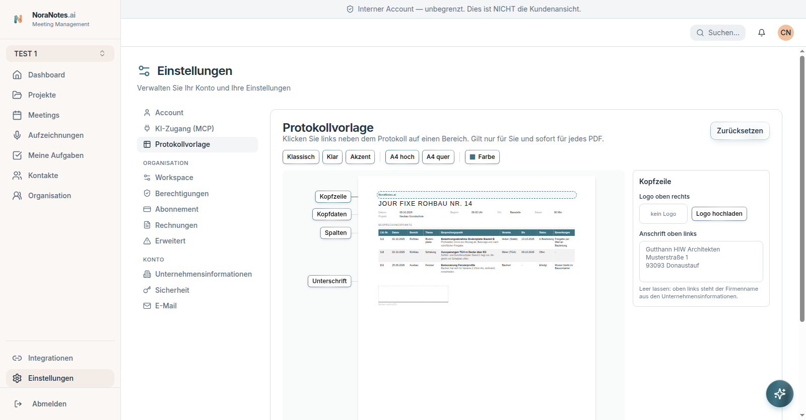
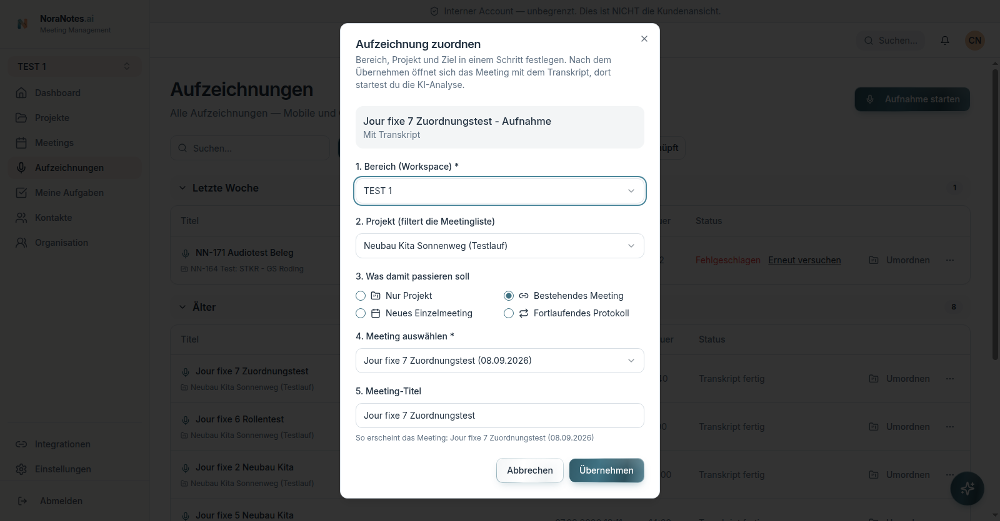
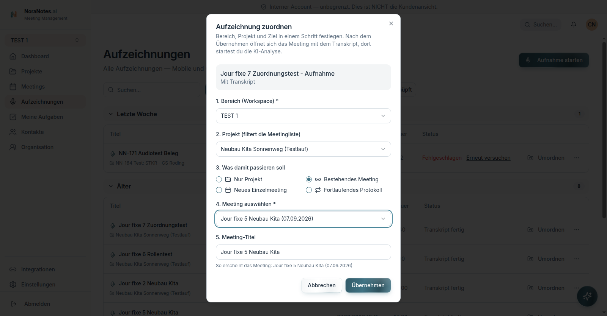

Erhoben am 12.10.2026 zwischen 08:18 und 08:51 Uhr (Europe/Berlin).
Umgebung für alle Bilder: staging.noranotes.ai, angemeldete Sitzung in einem eigens
angelegten Testkonto, Workspace „TEST 1“ (Marcels eigener), Projekte
„Benchmark Kinderhaus Sonnenfeld“ und „Neubau Kita Sonnenweg (Testlauf)“ — Schaudaten.
Der Balken „Interner Account — unbegrenzt“ gehört zum internen Konto, nicht zum Funktionsstand.
Auf der Produktivumgebung wurde ausschließlich gelesen.
Vier weitere Bilder fehlen hier bewusst. Sie zeigen Namen, die auch in der
Produktivdatenbank vorkommen, und gehören deshalb nicht auf eine öffentlich erreichbare Seite.
Sie liegen auf dem Server und können nicht öffentlich nachgereicht werden.
Angemeldete Oberfläche
1 — Angemeldete Sitzung auf Staging, Dashboard mit 12 Projekten.2 — Fortlaufendes Protokoll mit 120 Punkten, Nummern- und Themensicht, PDF-Knopf.
PDF-Export und Spaltenbreiten
3 — Menü „PDF erstellen“ und „PDF versenden“.4 — Der Export läuft auf Staging durch: „PDF erstellt und heruntergeladen!“. Die Datei
selbst blieb im Download-Puffer des Automatisierungsbrowsers, ihr Inhalt ist aus diesem Lauf
also nicht belegt.

5 — Vorlageneditor mit Live-Vorschau: Klassisch/Klar/Akzent, A4 hoch und quer,
Kopfzeile, Logo, Anschrift.6 — Spaltenbreiten einzeln ziehbar und sofort gespeichert: Lfd.-Nr. 6 %, Datum 9 %,
Bereich 8 %, Thema 8 %, Besprechungspunkt 31 %, Verantw. 10 %, Bis 9 %, Status 8 %,
Bemerkungen 11 %. Spalten ein- und ausblendbar, Breiten zurücksetzbar.
Gerenderte PDF-Seiten (lokaler Renderer, nicht die Oberfläche)
7 — Standardbreiten, gerendert aus derselben Vorlagensteuerung.
PDF öffnen8 — Gegenprobe mit breitem Besprechungspunkt und sehr schmalen Spalten. Sichtbar:
bei 4 % bricht Text zeichenweise um, der Mindestwert schützt nicht vor unlesbaren Spalten.
PDF öffnen
Aufnahme umordnen

9 — Zuordnung in einem Schritt: Bereich, Projekt und Ziel, wahlweise nur Projekt,
neues Einzelmeeting, bestehendes Meeting oder fortlaufendes Protokoll.

10 — Gesetztes neues Ziel vor dem Übernehmen.11 — Nach dem Übernehmen öffnet sich das Zielmeeting und zeigt weiterhin seine alten
4 Punkte und seine alte Zusammenfassung. In diesem Durchlauf entstanden keine Duplikate: Quelle
behielt 6 Punkte, Ziel 4. Das ist ein Einzelbefund, keine allgemeine Zusage.12 — Vor dem Analyselauf warnt die App: bestehende Punkte werden ersetzt, nicht
ergänzt, und erst nach Bestätigung im Prüf-Schritt. Der Lauf wurde abgebrochen, das Ersetzen
ist also nicht durchgespielt.